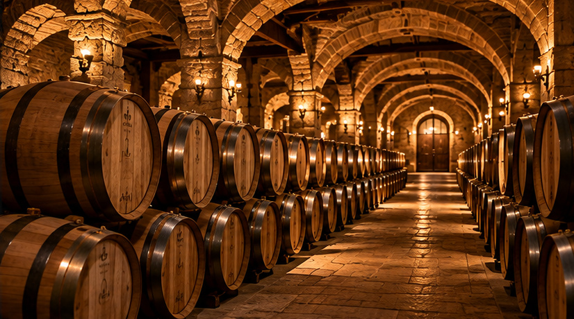

About Us
A passion for wine, an international perspective and the value of lasting connections.
Building Connections Through the World of Wine
MC GROUP is a Hong Kong-based name associated with international wine and beverage trading.
Our story is rooted in bringing producers and trade professionals closer together, with particular connections between European wine regions and Asian markets.
Wine is more than a product of its origin. It represents generations of knowledge, local character and the people who bring it to life. Our approach reflects respect for these traditions and for the relationships that help them travel.
Our Guiding Principles
Respect for Origin
Appreciating the regions, people and methods that give wines their individual identity.
Meaningful Partnerships
Valuing dialogue, understanding and dependable long-term relationships.
International Perspective
Bringing together regional knowledge and awareness of international markets.

Rooted in Wine. Connected to the World.
From classic European wine regions to established destinations in Asia, the world of wine is shaped by cultural exchange and the curiosity to discover something new.
MC GROUP's corporate profile reflects this international outlook, with an emphasis on professional relationships and an informed appreciation of wines and beverages.